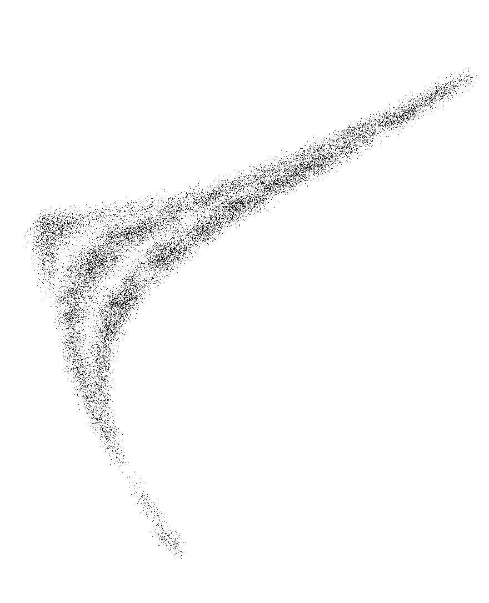
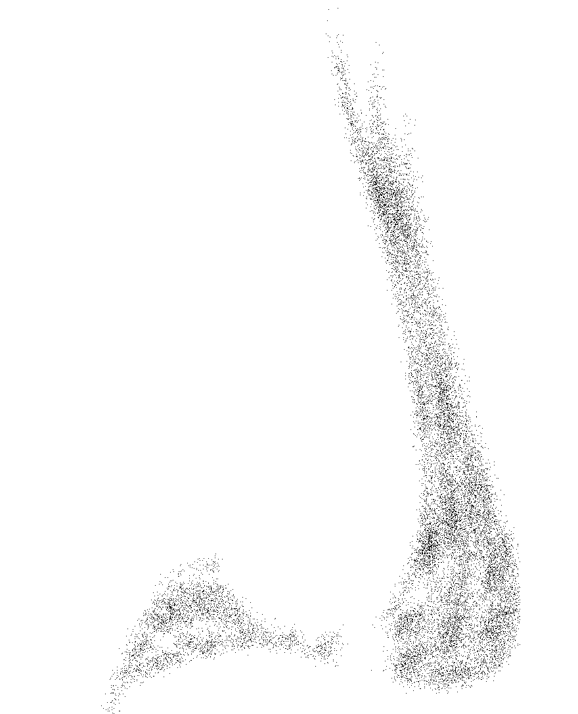
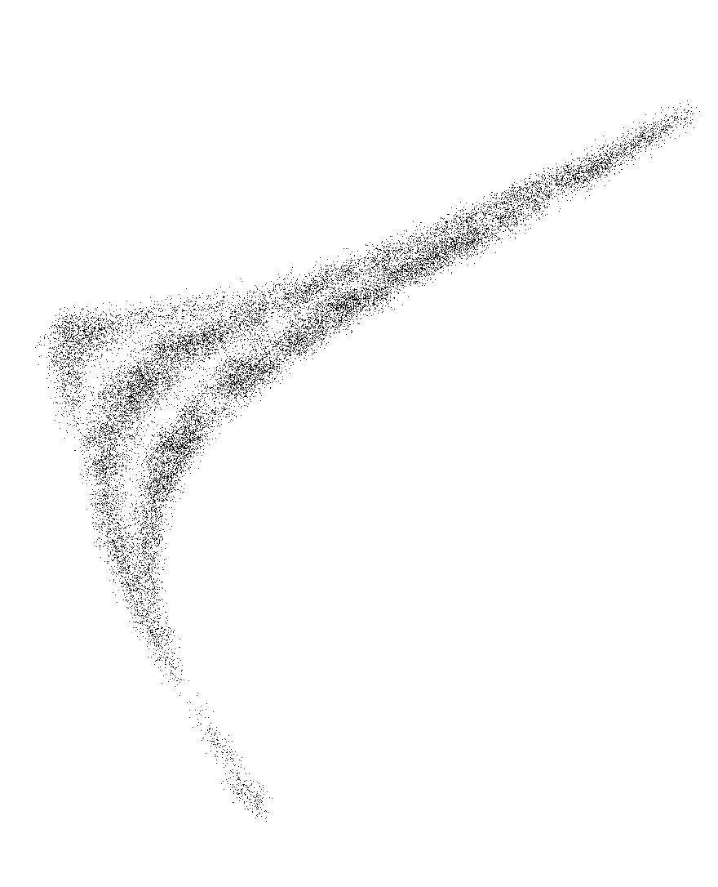
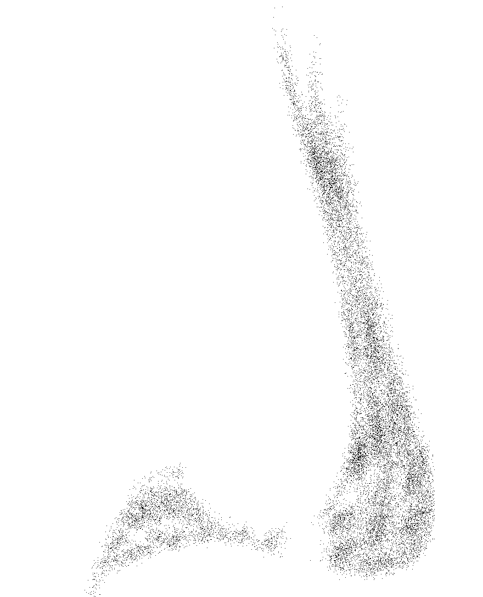

2024
[사랑을 볼 수 있게 해야지!]
594 * 841
동기들과 함께했던 전시를 위해 작업한 포스터입니다.
패턴이라는 대주제에서 사랑의 패턴을 주제로 작업을 했었는데요,
내가 무언가를 사랑할 때 나타나는 신체적, 감정적 변화를
눈으로 볼 수 있다면 그건 어떤 형태를 하고 있을지를 상상하며
이를 텍스트로 정리하고 텍스트들을 가공하여 그래픽 표현으로 변환한 작업물들입니다.
추상적인 개념인 사랑을 시각화함으로써 두근거릴 수 있는 모든 것을 떠올릴 수 있길 바라며 작업했습니다.
 





click and see my work(˘ᗜ˘)
my graphics¸¸♪
scan images